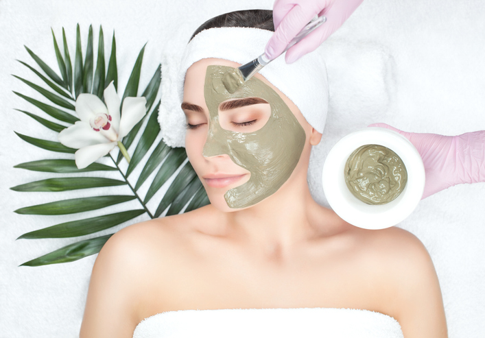

Witaj w świecie kosmetologii
Kosmetologia to dziedzina nauki i praktyki medycznej zajmująca się pielęgnacją skóry, włosów i paznokci, a także poprawą ich wyglądu za pomocą różnych technik i produktów kosmetycznych. Kosmetolodzy, specjaliści z tej dziedziny, zajmują się diagnozowaniem i leczeniem różnych problemów skórnych, takich jak trądzik, łuszczyca, egzema, a także starzenie się skóry i zmarszczki. W ramach kosmetologii stosuje się różnego rodzaju zabiegi kosmetyczne, takie jak masaż, peelingu, mikrodermabrazja, mezoterapia, laseroterapia czy też botoks. W kosmetologii wykorzystuje się również specjalne preparaty kosmetyczne, takie jak kremy, toniki, maseczki, serum czy też olejki, które pomagają w pielęgnacji skóry, włosów i paznokci. Kosmetologia jest dziedziną, która ma na celu nie tylko poprawę wyglądu, ale również poprawę samopoczucia i zdrowia. Poprawa wyglądu może wpłynąć na nasze poczucie pewności siebie, co z kolei przekłada się na jakość naszego życia.
Zakres dziedziny
Współczesna kosmetologia jest obszerną, interdyscyplinarną dziedziną wiedzy z zakresu ogólnych przedmiotów medycznych, chemicznych i biologicznych. Dotyka zagadnień z obszaru dermatologii i medycyny estetycznej, będąc dyscypliną mocno z nimi związaną. Obejmuje wiedzę z kręgu zarówno podstawowych, jak i klinicznych nauk medycznych (anatomię, histologię i fizjologię komórki, fizjologię, biochemię, chemię ogólną i kosmetyczną, dermatologię, alergologię, chirurgię plastyczną, geriatrię, onkologię, promocję zdrowia, endokrynologię). Oprócz tego w zakres wiedzy kosmetologa wchodzi psychologia, sensoryka i higiena[1]. W kosmetologii stosuje się również te same zabiegi fizykoterapeutyczne i fitoterapeutyczne, co w dermatologii i fizjoterapii. Kosmetolog jest więc zawodem mocno zbliżonym do stricte medycznego. W obszarze zainteresowań kosmetologii znajdują się: -profilaktyka mająca na celu opóźnienie zewnętrznych oznak procesu starzenia się (bruzdy, zmarszczki); -zapobieganie powstawaniu defektów skórnych oraz zachowanie jak najdłużej sprawności życiowej; -zagadnienia związane z upiększaniem; -skład preparatów kosmetycznych i ich wpływ na poszczególne rodzaje skóry; -korygowanie wad wyglądu zewnętrznego (także ze względu na ich wpływ na psychikę i samopoczucie pacjentów); -zagadnienia lecznicze dotyczące zmian skórnych, które niekorzystnie wpływają na wygląd zewnętrzny; -problemy otyłości (zarówno ze względów estetycznych, jak również ich wpływu na stan ogólny ustroju); -wpływ promieniowania nadfioletowego na skórę; -odczyny toksyczno-alergiczne, związane z kosmetykami (wyprysk kontaktowy alergiczny, alergia typu humoralnego, uczulenie na związki z tzw. grupą "para")[4].
|  |